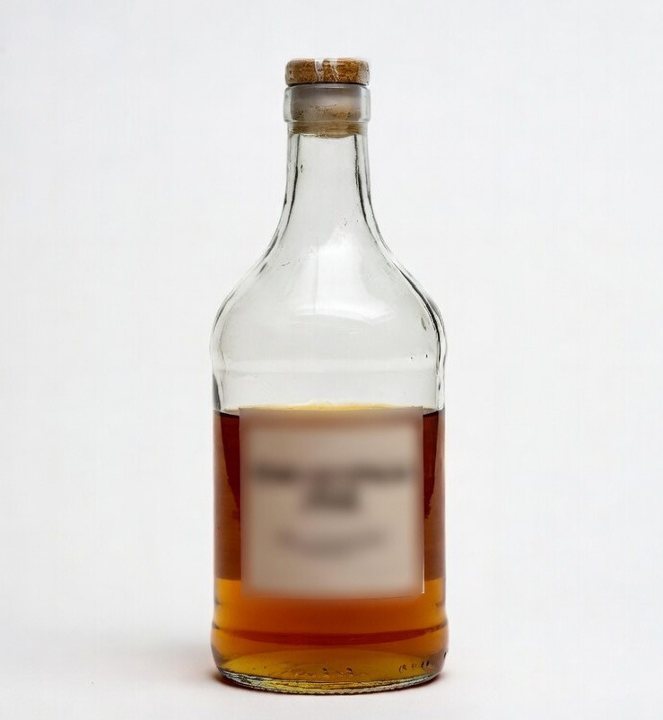

A European food brand sourcing glass vinegar bottles faced increasing cost pressure and limited visibility into alternative suppliers.
Glass production involves tight margins and hidden cost variables. Switching suppliers without proper verification could lead to quality issues and supply instability.
We benchmarked multiple suppliers, analyzed cost structures, and identified opportunities to optimize pricing without compromising specifications. We also managed sampling and quality verification.
• Reduced unit cost by ~18%
• Maintained consistent product quality
• Improved supplier competitiveness
• Enabled better margins and scalable sourcing